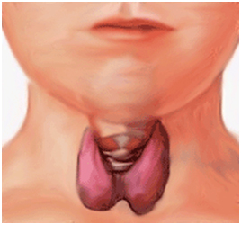

THYROID AYURVEDIC TREATMENT - Page 1Click here to go to Page 2Thyroid is now a days a common ailment in most of the indian ladies. Thyroid is due to impurity in blood which causes hormonal imbalance and hence causing a no. of symptoms like weight gain ,anorexia,weakness, reduced in activity,loss of cheerfullness ect. In hyperthyroidism, there is increased metabolic activity, high pulse rate and weight loss, palpitation, in the patient.
Hypothyroid is most common now a days specially in case of women. Hypothyroidism causes hormonal imbalance in them and causes too many other associated problems.
Ayurcure provides complete cure for the hypothyroidism and hyperthyroidism as well. we have treated lots of patients with these problems at our centre. AYURCURE provides complete cure for this disease. In other system of treatment pt. dependent on medications and he has to continue it throughout life long, with pesistent symptoms. Thus patient get tired of this disease and wants to get rid from this disease.
Best Ayurvedic treatment for
Thyroid, ayurvedic treatment for Hypothyroid,
AYURCURE is a ray of hope for such patients and we are happy to provide complete cure for this disease.
The incidence of Hypothyroidism is increasing day by day, and there is increasing demand to treat the disease through the Ayurvedic system of medicine, as it is completely natural and safe. Hypothyroidism can be treated effectively if we understand the disease and select the proper drugs, according to the condition and exact aetiology of the disease.
There has been slow advancement in the knowledge of thyroid disorders since the dawn of the 20th century. Awareness of the thyroid gland can be traced back as far as the first century AD when Galen, a famous Greek doctor, provided a brief description of this gland. He suggested that it functioned to lubricate the larynx, a view that was accepted for a long time. In 1656 Thomas Wharton named the thyroid, from the Greek word thyreos meaning 'Oblong shield'. He suggested that the purpose of the thyroid was to beautify the neck by giving it a rounder contour through filling the vacant spaces around the larynx.[1]
Function of Thyroid Gland and HormoneEven up to 1880, the thyroid was proposed as a receptacle of worms, or even a vascular shunt, to cushion the brain against a sudden increase in blood flow. The definite function of the thyroid as a controller of metabolism was studied and confirmed by George Murray, Hector Mackenzie and Edward Fox .[1, 2, 3] The major function of the thyroid hormones is to stimulate the synthesis of protein once they have entered the cell nucleus. Another important function is to stimulate the activity of the cell's mitochondria. These intracellular organelles are the sites at which there is a controlled exchange of energy. Some energy is conserved for the body's functioning, while the remainder is dissipated as heat. The proportion of energy devoted to each of these processes is controlled by the thyroid hormones.[4]
Cells respond to the thyroid hormone with an increase in metabolic activity. Metabolic activity, or metabolism, is a term used to describe the processes in the body that produce energy, and the chemical substances necessary for cells to grow, divide to form new cells, and perform other vital functions.[4, 5] In the Rig Veda {the first of a collection of sacred ancient Hindu texts) the first Rik starts with the 'agni meele purohitam' meaning agniis purohita, the conductor of rituals to protect the pura or this body.[6] The term agni means fire, which is a prime and ultimate factor in the maintenance of life. In vachaspatyam, agni is defined as 'nayate parinamayateeti' that which brings changes in an organism or a substance, indicating it is a key factor in transformation of consumed ahara viharadi dravyas of vijateeya (heterogeneous) origin into sajateeya (homogenous) nature. Since agni is a derivative of teja mahabhoota, it carries to paka in which the inherent feature is change. The term metabolism, which literally means change, is used to refer to all the chemical and energy transformations that occur in the body, which is nothing but the function of agni viz. 'Nayate parinaaamyateeti'.[6]
Hypothyroidism results when the thyroid gland fails to produce enough of the thyroid hormone, due to structural or functional impairment that significantly impairs its output of hormones - this leads to the hypo metabolic state of hypothyroidism. This tends to slow down the body's functions. The thyroid gland controls metabolism through the production of thyroid hormone. Hypothyroidism occurs when the thyroid gland does not produce enough thyroid hormones.[7] Main Causes of Hypothyroidism The main causes of hypothyroidism can be classified [8] into: 1. Primary (thyroid failure):
Hypothyroidism, caused by the inability of the thyroid gland to make T3 and
T4, is called primary hypothyroidism; 2. Secondary (due to pituitary TSH
deficit); Ayurveda and the Thyroid Gland There is no direct mention of the thyroid gland
in Ayurveda, but a disease by the name Galaganda, characterized by neck
swelling, is well known. The first description of neck swelling was
mentioned in Atharva Veda (the last of the four Vedas) by the name apachi.
Charaka mentioned the disease under 20 sleshma vikaras.[10] Sushruta
{renowned ancient Indian surgeon}in Sareera Sthana has mentioned that of
the seven layers of the skin, the sixth layer Rohini is the seat of
Galaganda.[11] In Nidana Sthana he described Galaganda as two encapsulated
small or big swellings in the anterior angle of the neck, which hang like
scrotum, [12] whereas Charaka mentioned Galaganda as a solitary
swelling.[13]
A case of Galaganda attended with difficult respiration, a softening of the whole body, weakness, a non relish for, loss of voice, as well as the one which is more than of a year's standing should be abandoned by the physicians to be incurable.[18] Although these facts were mentioned centuries ago, it is still an accepted fact that environmental factors, especially iodine, plays an important role in the functioning of the thyroid gland. Any imbalance in iodine metabolism can upset the thyroid condition; either too much or too little iodine can result in the development of goitre. So the areas where the soil is depleted, also the soil content in which food grows, the drinking water and goitrogenic foods, play a vital role in disease process. As far as consuming fish or any seafood goes, all a rich source of iodine, an excess may be a causative factor.[19]
From the above description we can say that Galaganda is a condition related to thyroid gland. But hypothyroidism is not just a local disease; it has many symptoms related to many systems. So it is better not to restrict hypothyroidism with Galaganda as mentioned in the classics.
Testimonial - Ayurvedic Treatment for Thyroid
Click here to go to Page 2 Next Page >>
Copyright ? Ayurcure | Domain, Web hosting, SEO by www.pushtiwebindia.com, web designing goregaon |